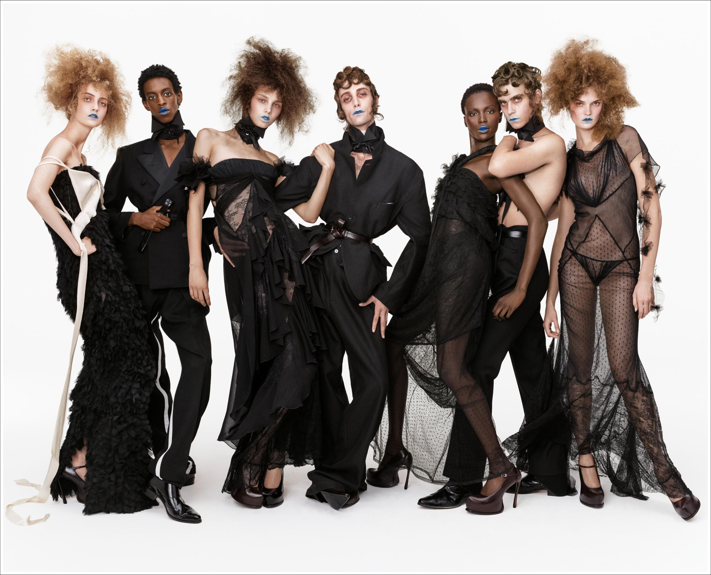

七个人都穿着以黑色为主的服装，照片却没有变成一整片暗色。薄纱透出身体，挺括外套挡住光线，密集装饰与光亮鞋面又形成不同的表面；人物互相靠近，头发、肩膀和手臂仍各有轮廓。蓝色唇妆则在这些差异之间，建立了一个反复出现的联系。
这张照片来自 ZARA 与 John Galliano 合作的 Re{form} Zara Vol. 1 系列，摄影署名为 Steven Meisel。The Fashionisto 刊登了同一幅七人群像；The Daily Front Row 的系列报道同时列出造型 Karl Templer、发型 Guido Palau 与妆容 Pat McGrath。¹ ² 它适合用来观察：当服装颜色接近时，一张时装照片怎样通过材质、身体与人物关系保持丰富。

Re{form} Zara Vol. 1 群像。摄影：Steven Meisel／ZARA。来源：The Fashionisto 系列报道。配图保留原比例。
颜色减少以后，材质的差别反而更明显
画面里的黑色至少以几种方式出现。左端长裙表面的密集装饰形成细碎明暗，左侧西装与中央宽肩外套呈现较连续的暗面；右侧薄纱透出肤色，最右长裙的波点与深色拼接线则在透明部分留下清楚结构。脚部的光亮鞋面，又产生较集中的高光。
这些变化让观众可以区分人物与衣服，而不必依赖每个人穿不同颜色。厚实与透明、大面积与小纹理相邻，就有了可比较的关系。若所有人都穿同样平整、同样不透光的黑色服装，身体重叠处更容易连在一起，个体之间也会少掉一些辨认线索。
黑色在这里并不自动等于简约。衣服依然包含荷叶边、褶裥、蕾丝、飘带、立领和较夸张的体积。统一颜色压缩了色彩变化，让复杂性更多集中在形状与表面。它使这些装饰能够共同出现，而不是把装饰删去。
浅色背景也参与了这种区分。深色衣边在背景前容易辨认，薄纱又让背景与身体的颜色透进来。透明度因此不只是服装的细节，也是把不同深度、不同人物分开的手段。
七个人并排，为什么没有像普通合影那样站齐
照片保留了横向排列的基本秩序：七个人都能被看见，整体从左到右展开。但它没有让每个人保持相同肩高、相同距离和相同站姿。
左端人物向画面内侧倾斜，第三位人物的头部偏向一边；中央造型肩部较宽，腰间收束，腿部与宽大裤形向下展开。右侧几个人靠得更近，手臂横过肩部和胸前，使身体形成另一组交叠。头部的倾斜、肘部的弯曲与腿部方向，共同打破了整齐重复。
这里的重点是让人物相连，同时保留可读性。第三位人物的手落在中央人物肩部，把两套造型接在一起；右侧的横向手臂又把相邻面孔聚拢。手不再只是“应该放哪里”的附属问题，而是参与组织整组人的线条。
联系也有代价。人物靠得近，部分衣服便被手臂或其他身体遮挡，正面版型不再完全清楚。作为系列形象照片，这种遮挡可以换来群体的整体感；若是需要查看每件衣服剪裁的商品图，就还需要独立、较中性的展示。两种照片承担不同任务。
人群内部的空隙，同样在组织画面
人物之间并非全部填满。肩颈旁、手臂弯曲处、腿部之间和裙摆外侧，能看见浅色背景。这些空隙把连在一起的黑色重新切开，避免下半身和服装边缘完全混成一团。
中央人物的宽肩与较窄腰部形成明显转折，周围又有几处裸露手臂。深色、肤色与背景相邻，让身体的方向更容易辨认。最右侧长裙的透明部分，也在衣服内部保留了一种较轻的区域，与中央厚实裤形形成区别。
这说明群像构图不能只安排脸的位置。只要几个人挨在一起，袖子、头发与裙摆就可能互相遮住；需要同时看人物内部的空隙，以及整组人外侧的轮廓。衣服越复杂，这些小面积的分离越重要。
蓝色唇妆：面积很小，却能把脸部连起来
七张脸都出现蓝色唇妆。它在画面中的面积很小，但与肤色、发色和黑色衣服有明显区别，因此容易成为辨认各张脸的重复标记。观众看向一个人的嘴唇后，还能在旁边找到相似颜色，视线有了继续横向移动的线索。
蓝色也使画面远离普通礼服合影的预期。黑色西装、长裙与高跟鞋本来带有熟悉的正式着装线索，冷色唇妆却增加了一层不常见的妆容表达。服装仍可辨认，人物已经带有更强的舞台造型感。
这是基于成片的设计解读。不能因为使用蓝色，就断言创作者必然要表达疏离、反叛或某种固定情绪；不同背景、光线与姿态，会改变同一种颜色的感受。这里可以说清的是：蓝色在多张脸上重复，区别于周围颜色，也改变了观看正式服装的日常预期。
发型的分量，改变了群像上半部的轮廓
左端、左侧第三位与右端人物的头发向外蓬开，形成较大的不规则形状；其余人物的短发或贴近头部的卷发，则留下更紧凑的外形。几处蓬松区域分散在整组人上方，使轮廓既有呼应，也没有变成连续、等高的一条边。
发型的效果需要与衣领和肩部一起看。大体积头发下方出现裸露肩颈或较薄的衣料，头发与身体之间便有可辨认的过渡；中央人物的头发较贴近头部，宽肩外套反而获得更完整的表现。并非每一个位置都同时放到最大，形状之间才有分工。
这里不宜将具体发型直接解释为人物性格，也不能仅凭照片复原烫发、假发或造型步骤。对于观看和学习，更有用的问题是：头发增加了多少面积，它是否遮住脸和衣领，以及它与相邻人物的头发会不会连在一起。
戏剧感来自熟悉着装线索的重新组合
双排扣、立起的衣领、颈间结饰、长裙和细高跟鞋，都能让人联想到正式着装。但照片把它们与透明衣料、夸张肩形、露肩、蓬大发型和蓝色唇妆放在一起，形成了明显经过安排的人物造型。
系列报道指出，Galliano 对 ZARA 的过往设计进行重新处理，并使用缩放、拼接等方法发展新表达。² 这提供了理解系列的背景；具体到这张照片，能够直接观察到的仍是比例、材质与穿法的改变。不能将报道中的每一种制作方法，逐项认定发生在某一件衣服上。
它也延续了此前讨论 ZARA 形象照片时的一个方向：服装通过完整人物形象获得时装感。不过，Re{form} 是特定的设计师合作系列，表达比日常基础款更强烈，不能用这一张照片代表 ZARA 所有产品的风格。
这幅群像值得学习的，是它怎样在统一与差异之间安排关系：黑色和蓝色唇妆形成重复，材质、头发与姿态提供变化；人物相互连接，空隙与明暗又帮助辨认。拍摄群体时，可以先检查这些关系是否清楚，再判断是否还需要更多道具、颜色或动作。画面的丰富，首先来自现有元素之间的组织。
资料与署名
- The Fashionisto：John Galliano Dials Up the Drama at Zara，2026年10月1日。用于核对同一幅群像、系列名称及摄影署名。
- The Daily Front Row：Every Piece and From Re{Form} Zara by John Galliano, Vol. 1，2026年10月1日。用于核对合作系列背景与造型、发型、妆容署名。
查阅日期：2026年10月30日。图片版权归 ZARA／相应权利人；画面作用与观看效果为本文分析，未将其写成创作者已阐释的动机，也不依据成片推定具体灯具、镜头或拍摄参数。